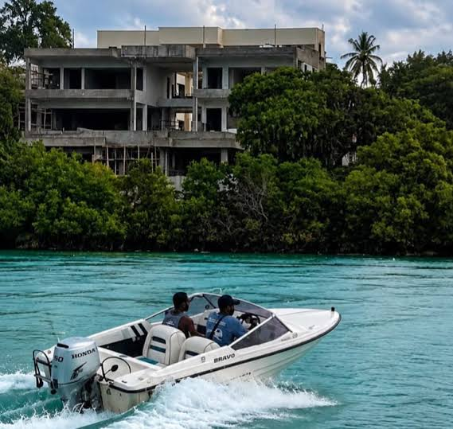
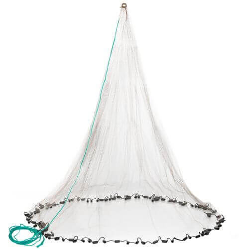

Ksh 2,500 Strengthened silk fiber, waterproof. 4.5 326 reviews The life jacket is durable, comfortable, and easy to wear. It provides reliable buoyancy and essential safety support during marine activities. A great choice for anyone who values safety on the water.

The 2-litre engine speedboat delivers excellent performance, impressive speed, and smooth handling on the water. Its powerful engine provides reliable acceleration, while its sturdy design ensures stability and comfort during trips. It is suitable for marine transport, recreational activities, and coastal adventures. Overall, it is a great choice for anyone looking for a dependable speedboat that combines power, efficiency, and an enjoyable boating experience.

This high-quality fishing net is durable, reliable, and designed for excellent fishing performance. Made from strong materials, it offers good resistance to wear and tear, making it suitable for regular use in different fishing environments. Its reliable construction helps improve efficiency and ensures long-lasting service. It is an excellent choice for both professional and recreational fishermen seeking quality and value.